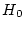
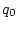
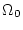
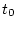
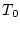
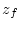
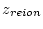
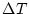
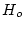
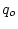

This schedule is TENTATIVE and can change at any time. We will
follow the Academic Calendar for Spring 2025, which is listed on:
https://students.asu.edu/academic-calendar
. The approximate topics for TuTh each week are listed for the
Tuesday date that week:
[Jan. 14] (0) [Ch. Ry 1-2] Introduction. Big issues in modern cosmology. Main evidence for a hot Big Bang.
[Jan. 14] (1) [Ch. Ry 2] Basic galaxy properties. The Hubble sequence. The galaxy luminosity function. The extragalactic distance scale: history, results, controversy, and its resolution. Cosmological parameters: , , , , k, ; , n, , , . How combinations describe the Universe. The value of and . How Large Scale Structure effects the distance scale. Recent supernova results.
[Jan. 21] (2) [Ch. Ry --] Clusters of galaxies and Large Scale Structure. Peculiar velocities. Groups, clusters, super-clusters. Topology of the universe. Galaxy correlation functions. Cluster X-ray emission. Dark Matter in galaxy clusters. Simulations. The evolution of galaxy clustering with cosmic time.
[Jan. 28] (3) [Ch. Ry 3-4] Synopsis of Relativistic Cosmology. Friedman - Robertson-Walker models. Olbers paradox. Redshift: origin and measurement. General Relativity as Theory of Gravity. Standard and non-standard cosmological models. The cosmological observables we want to predict.
[Feb. 04-_Feb. 11] (4) [Ch. Ry 5-7] Single Component Universes. Multiple Component Universes. The classical cosmological tests: Hubble's law. Angular diameters and -z. Direct physical measurements of , , , , etc. The age problem revisited. Applications of models to counts, redshift distributions, Hubble diagrams, and the EBL/CIB. Models with and without Cosmological Constant, and with and without equation of state.
[Feb. 18--Feb. 25] (5) [Ch. Ry 9-10] Evidence for a hot Big Bang. Homogeneity and Isotropy. Photon/Baryon ratio. Helium production and nucleosynthesis. The Cosmic Microwave Background Radiation (CBR): Black-Body nature, large and small scale fluctuations, measurements and upper limits, confrontation with models for structure formation. Recent Boomerang, Maxima, and WMAP results.
[Feb. 25] (6) [Ch. Ry 1, 11] The Early Universe. The Planck time. Horizon problem. Inflation. The Grand Unified Theory. Lepton and Baryon production. Nature of Dark Matter. Domain walls and cosmic strings. Magnetic monopoles and axions, and other topics that you may not choose for your term project.
[Mar. 04] (7) [Ch. Ry 8, 12] The epoch of recombination. Surviving Jeans masses. The formation of galaxies and large scale structure. Large and small scale structure of the CBR. Epoch of reionization or reheating. Linear and non-linear growth of fluctuations into galaxies. Distant galaxies. Galaxy surveys. Redshift surveys. Galaxy counts, colors and clustering. The morphological and spectral evolution of galaxies with cosmic time. CDM and hierarchical simulations.
[Mar. 11--13] NO CLASSES --- Spring Break March 10-14
[Mar. 18] (8) [Ch. Ry 8, 12] Initial mass function. Star formation rate. The evolution of stellar populations. The epoch(s) of galaxy formation. Galaxy formation from sub-galactic clumps. Confrontation with Cold Dark Matter models. Dark Matter and gravitational lensing. Where are the proto-galaxies? The oldest galaxy ages and the globular cluster problem.
[Mar. 25] (9) [Ch. Ry --] The Intergalactic Medium (IGM). Quasar absorption lines. Lyman- and metal systems. Growth of metallicity in the IGM. Star formation rate, luminosity density, and metal production as function of cosmic epoch.
[Apr. 01] (10) [Ch. Ry --] The Dark Ages: the Universe at z 7-17. The ionizing UV-background. Population III stars. The neutral Hydrogen absorption edge and emission web. Did AGN precede or cause galaxy formation? The sub-mm and cosmic IR backgrounds. Prospects to find pre-galactic objects with the JWST, Spitzer, ALMA, SKA, LOFAR, etc. Suggestions for Dissertation topics.
[Apr. 08] Last part of home-work problems due on this date.
[Apr. 08] (11) [Ch. Ry --] Active Galactic Nuclei (AGN): Seyfert's + QSO's; Radio galaxies + Quasars. LINERS. The central engine of AGN. Supermassive black holes. Morphology of extragalactic radio sources. Buoyancy in clusters. Compact sources as rigid rods. The unified picture of AGN.
[Apr. 15] (12) Discussion of term projects.
[Apr. 22] (13) [Ch. Ry --] The cosmological evolution of AGN: Radio sources, Quasars, X-ray sources. Constraints from source counts and luminosity functions. Relation of AGN to high redshift galaxies. Alignment effect. Did AGN cause galaxy formation? The co-evolution of supermassive black-holes (SMBH's) and galaxy bulges. Relation between cosmological and galaxy evolution. Epoch dependent merger rate and CDM.
[Apr. 24] Term project due on this date (early bird for extra credit).
[Apr. 27] Honors and Term Projects due: Sunday Apr. 27 midnight (HARD DEADLINE). Submit PDF copy via Canvas to the TAs.
[Apr. 29] (14) Review of lecture material Discuss any (new) material that came up or material that could not be totally covered during the semester.